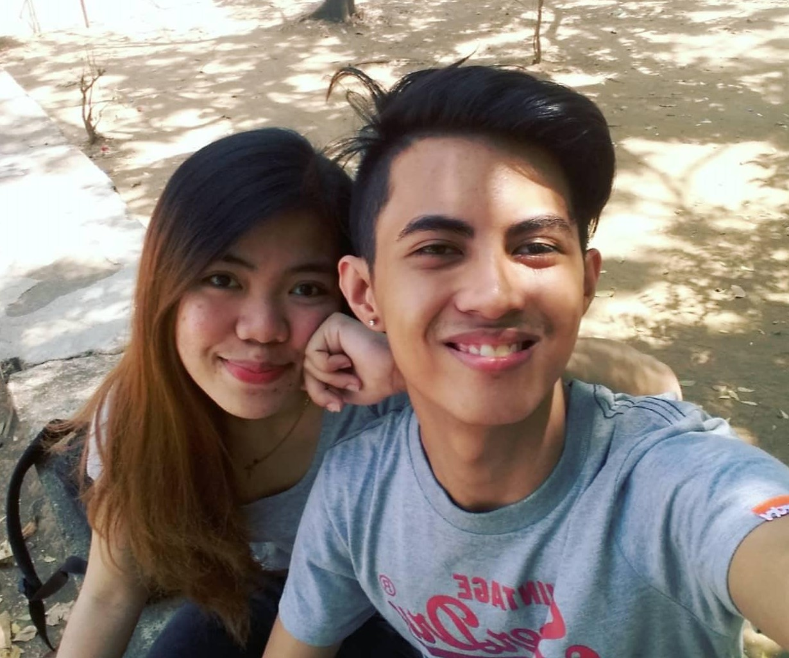

<ion-content padding>
  <ion-grid>
    <div>
      <ion-row>
        <!--  -->
      </ion-row>

      <div margin-top class="msg-container">
        <h5 text-justify>
          By, Sorry kung nasaktan kita dati. Sorry kung sobrang babaw ng dahilan
          ko. Sorry dahil ang naging gago ako sayo. Sorry kung para na kitang
          pinatay nun. Sorry when I was not there when you needed me the most.
          Gusto kong bumawi sayo Byyy! Big Time! Gusto ko patunayan sayo ngayon
          na babawi ako sa lahat ng kasalanan at pagkakamali ko sayo. Gusto kong
          ma-earn ulit yung trust mo. Gusto kong hindi kana matakot at maging
          kampante kana sakin. Gusto ko ikaw na last ko. Gusto ko ikaw na yung
          makakasama kong tumanda. Gusto kong makasama kang tumanda. Gusto ko
          ikaw yung laging nasa tabi ko. Gusto ko sabay nating haharapin ang mga
          problema at struggles sa buhay. Sobrang nagsisi ako sa lahat ng nagawa
          ko sayo. Hindi mo deserve masaktan at iwan sa ere. Deserve mong
          respetuhin, mahalin ng tunay, at tratuhin bilang isang prinsesa at
          bilang nakakataas na babae. Kung bibigyan mo ako ng isa pang
          pagkakataon, promise ko sayo na hindi ko sasayangin yung chance
          mahalin ka. Ipapakita ko sayo na babawi ako sa lahat ng nagawa ko
          sayo, dodoblehin ko effort ko sayo, mamahalin pa kita ng sobra sobra
          na hindi nagawa ng iba para sayo, susuportahan kita sa lahat lahat.
          Handa akong ibigay sayo ang lahat kahit buhay ko pa yan. Kasi sayo ko
          na nakikita ang lahat, sayo ko na makikita future kids natin at kung
          pano natin sila papalakihin ng maayos. Sayo ko na naiimagine ang lahat
          By. Promise ko sayo never na kitang hahayaan ulit na mawala. And sana
          magtiwala ka lang sa lahat ng gagawin ko. Tandaan mo madami pa tayong
          gagawin sa future. Ikaw magiging travel buddy ko. Ikaw magiging yakap
          buddy kapag may problema at sad stories tayo about life. Ikaw yung
          taong mamahalin ko. Ako yung magiging future boyfriend/asawa mo if
          ever bibigyan mo ako ng pagkakataon para itama ang lahat. Itatama ko
          na lahat ng pagkakamali ko. Ayoko ng mawala ka, ikaw na yung laging
          nanjan for me at ayoko masayang yung memories natin. Napakadami na
          nating memories at ayoko masayang lahat yun. I hope na-appreciate mo
          tong mobile application proposal na ginawa ko para sayo. Hindi man ito
          ganun ka romantic at lovely tulad ng ibang nagp-propose pero alam kong
          buong buo at galing sa puso yung paggawa ko para dito. Gusto ko kasi
          sana maging unique yung proposal ko sayo. Sana nagustuhan mo ito. It's
          not much but its worth reading.
        </h5>
        <h5 text-justify>
          I WILL ALWAYS LOVE YOU BABY NO MATTER WHAT. I WON'T LEAVE YOU NO
          MATTER WHAT. I WILL STILL KEEP COMING KUNG HINDI KA PA TALAGA READY.
          MAIINTDINIHAN KO NAMAN YUN AT HINDI NAMAN KITA MASISISI KUNG GANUN.
          BASTA ALWAYS REMEMBER NANDITO AKO LAGI NAGHIHINTAY SAYO. NEVER KITA
          SUSUKUAN HANGGANG HINDI NAWAWALA YUNG TAKOT MO. IPAPARAMDAM KO TALAGA
          SAYO NA HINDI KANA DAPAT NATATAKOT BIG TIME! AKO YUNG LALALKING
          MAGPAPAKITA SAYO NUN. JUST GIVE ME ANOTHER CHANCE TO PROVE YOU NA
          HINDI KANA DAPAT NATATAKOT. SO SANA MAGTIWALA AND HAVE HOPE DITO SA
          PROPOSE KO. I WILL NEVER LEAVE YOU AGAIN BY. I WANT TO GROW OLD WITH
          YOU AND DIE OLD WITH YOU. I WILL GIVE AND SHOW MY BEST TO HAVE YOU
          BACK. I WANT TO START A NEW LIFE WITH YOU BY. FORGETTING THE PAST AND
          START SOMETHING NEW WITH YOU. DELETE NA NATIN YUNG MGA BAD MEMORIES
          NATIN AND KEEP THE GOOD MEMORIES. I KNOW I AM NOT PERFECT, HINDI RIN
          AKO MAYAMAN PERO YUNG MAHALIN KA NG BUO AT IBIGAY SAYO ANG MGA NEEDS
          MO YUN ANG MAPAPANGAKO KONG KAYA KO IBIGAY SAYO NG BUO NG HINDI
          NAGDADALAWANG ISIP. SORRY SOBRANG HABA KULANG KULANG PA NGA ITO EH.
          AND I AM HOPING FOR AN ANSWER BY. HINDI MAN NGAYON BUT SOMEDAY SOON. I
          LOVE YOU BABY. TANDAAN MO YAN.
        </h5>
      </div>
    </div>

    <ion-row text-center>
      <div col-12>
        <button
          ion-button
          round
          type="button"
          color="danger"
          class="no-shadow capitalize btn-medium"
          (tap)="next()"
        >
          NEXT
        </button>
      </div>
    </ion-row>
  </ion-grid>
</ion-content>
